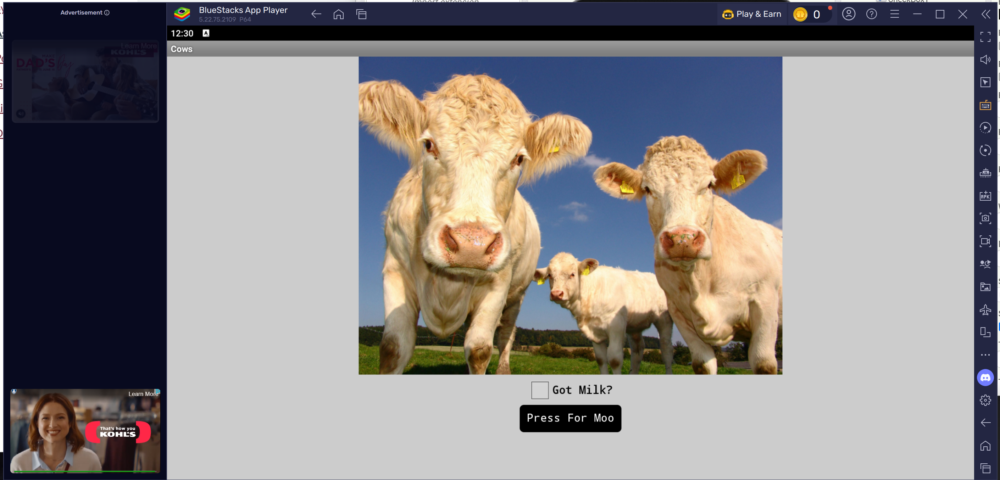
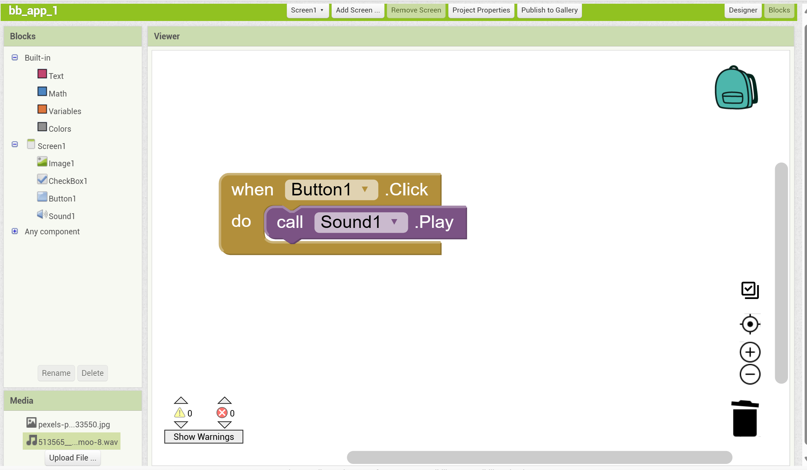

Projects and Blogs
App Inventor Blog Post
This first assignment involved creating an app using MIT's App Inventor tool. This was a very simple and straight forward exercise to practice testing an app on an emulator and then deploying it for download. The process to make the app itself using the tool was not too difficult. The Emulator I chose is called Blue Stacks App player. In order to emulate using Blue Stacks, I went to the Google Play store through Blue Stack to download the MIT AI2 companion. On the App Inventor webstite, there is an option to connect to an AI2 companion using a 6 digit code. I was able to get connected and run my app on the emulator. In the app, there is an image of cows, with a checklist as well as a button. The app should give you a good moo sound when you click on the button.
You can see what the app looks like in this first screenshot:
The next screenshot shows the logic flow of the app:
Made with github pages
view the code for this this website at GitHub